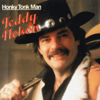

Teddy Nelson - Honky Tonk Man (Album, 2001)
01 - Honky Tonk Man (2:22)
02 - Semi-Truck (3:45)
03 - Skilsmisseferd I Hardanger (3:22)
04 - Island Of Love (3:20)
05 - I'm Walking In The Sunshine (3:16)
06 - You Can Call Me A Cheater (2:32)
07 - Why Do You Keep On Hurting Me (2:06)
08 - Boxcar Wayne (2:28)
09 - Memories (2:52)
10 - Don't You Knock On The Door (2:48)
11 - Jack Corey (3:20)
12 - It May Rain (2:58)
13 - Another Bottle (0:23)
© Mountain 1985 :: [COL 1403] © A Play Collection 2000 :: [11807-2] © Talent Musikk AS 2016 :: [Digital]
Notes
Review
171/366 (Project 366)
Norwegian authentic Country Rock music with Honky Tonk mind.